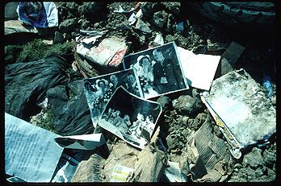

Course Description
This lab practicum provides a hands-on
introduction to those basic camera skills and photographic methods necessary
for documenting archaeological sites and historic materials. Though course
content will vary, the objective of this section is to provide archaeology
and other social science students with the necessary skills for producing
effective images in both film media and digital formats. Though equipment
and instruction will vary from year to year, specific imaging technologies
and methods covered in this section include studio or museum lighting,
copywork, and computer-based digital scanning and image manipulation for
the purposes of historic photo restoration and artifact reconstruction.
See relevant SBSM 316 section for upper division equivalent.